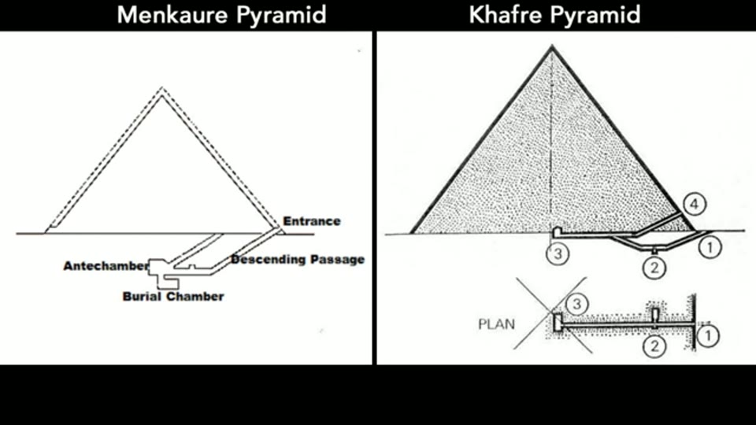
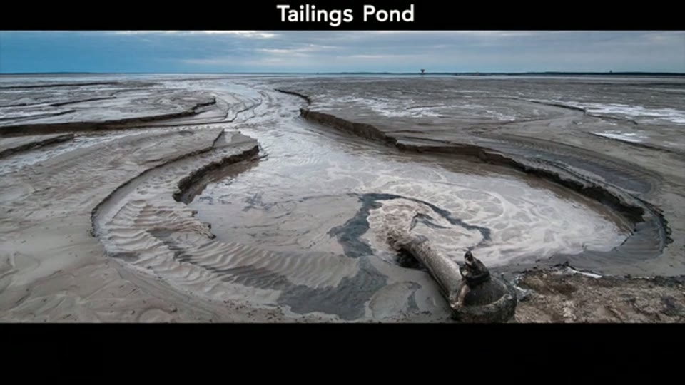
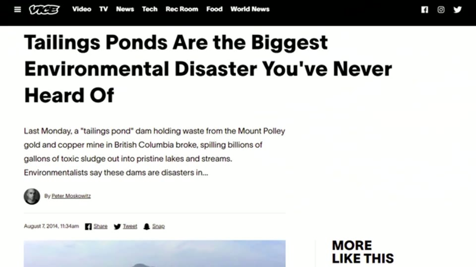
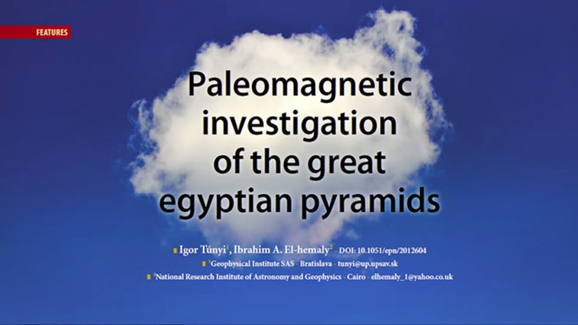
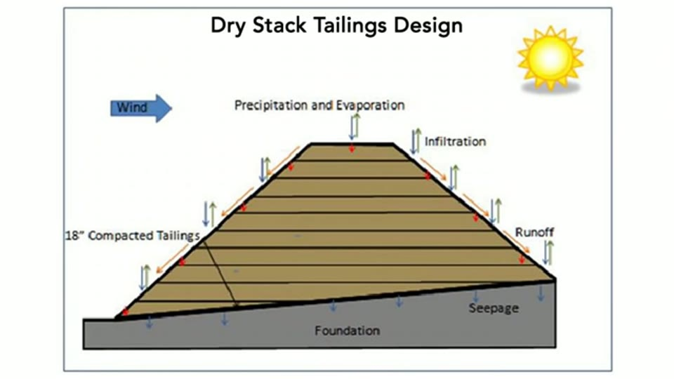
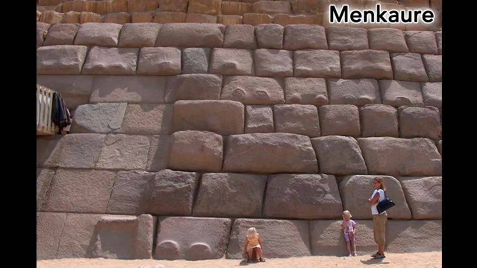

Curious Being
What were Great Pyramids' Function If Not Tombs?
Tina · 22 min · watch on YouTube · summarised 2026-09-27
The middle of a three-video chain. The previous one argued the Great Pyramid was not a power plant; the next asks what was being mined. This one answers the question in between: if the pyramids had a function, what was it?
The move that sets everything up
00:47–01:44 The Great Pyramid is the only one with connected chambers and passages above and below ground. Every other large pyramid — Giza, Dahshur, Abusir, Saqqara — has minimal openings and is almost entirely solid, sitting on top of underground chambers. Her argument is that no pyramid should be explained on its own; they must be taken as a group, and any function proposed has to fit the solid ones too.
Then the concrete version of the point:
Even for the great pyramid, if the goal was to create chambers and passageways, then it was completely unnecessary to pile up all those stone blocks. If the builders just skipped every ten blocks or so, a lot of labor would have been saved and the structural integrity wouldn't have been compromised.
So the packing is the point. Whatever these buildings are, they were built to contain as much material as possible in one place.
The sections she shows for Menkaure and Khafre make the point well — two solid triangles of stone over a descending passage and a couple of small rooms cut into the bedrock. They also label those rooms Antechamber and Burial Chamber, which is the reading the title sets aside.

Every large pyramid but Khufu's is a solid mass over a small chamber cut below ground — so any proposed function has to explain the mass, not the rooms.
The claim
02:22–03:10 The Giza shafts and underground chambers, she has already argued, are an ancient mine. The Great Pyramid shares tool marks with the Osiris Shaft, and the shafts sit close to the pyramids. Her proposal is that the pyramids are the other half of that operation: carefully engineered mine tailings and waste-rock storage.
She is direct about how it sounds, and about her own resistance to it:
Calling them mine waste dumps or slag heaps is just plain offensive… Even though emotionally it's hard for me to accept, this tailing storage theory did derive from my research. I was never inclined from the start to conclude the way I did.
And she frames it as a compliment rather than a demotion 03:50–04:08: if the pyramids really are waste storage, then the civilisation that built them was so far ahead that today's technology has not caught up.
The picture she opens the comparison with 04:13–04:31 is her own Osiris Shaft section beside a cartoon illustration of a generic mine — flat-colour headframe, dump truck, stick-figure miners — and the "pile of mine tailings in a pyramid shape" she points to in it is drawn scenery. Her shaft diagram, meanwhile, labels its middle chamber with 6 grave niches.

The comparison the whole argument starts from: a shaft-and-gallery mine with a heap of waste on the surface, set beside her section of the Osiris Shaft.
What mine waste actually is
The most informative stretch, and none of it is contentious 04:13–08:11.
- Waste rock is the excess rock left when metal is separated from ore. Tailings are finely ground rock and mineral waste from the extraction process. Both are usually useless and disposed of; chemicals such as cyanide are used in the separation.
- Because of how minerals are processed, both can carry heavy metals, acidic water and residual chemicals. Historically the industry used the cheapest methods — dumping into rivers and lakes, or piling on open ground — and wind and rain then carried the contamination downstream.
- The standard modern method is the tailings pond: slurry impounded behind a dam. Some are several miles across and hundreds of feet deep. There have been catastrophic failures, with up to several hundred deaths and large areas of land and water destroyed.
- The newer approach is dry stack tailings: filtered tailings placed and compacted into a mound. No pond and no dam means no dam failure, and the structural stability is much better. Storing on the mine site saves transport and limits the contamination footprint. Beyond that is cemented tailings paste, in which the waste is bound rather than merely compacted.


Why mine waste is a hard engineering problem: impounded slurry, and dams that have failed with hundreds of deaths.
Her own caveat, and it is a large one 11:26–11:41: cemented tailings paste is still a new concept and she could find no large-scale cemented tailings mound anywhere in practice today. The comparison object for the entire argument is therefore a set of design diagrams, not a built structure.
The material step, and the citations
08:11–11:26 For pyramids to be cemented waste, the blocks have to be cast rather than quarried. She goes to Joseph Davidovits, the French materials scientist who invented geopolymer chemistry and proposed that pyramid blocks are a form of limestone concrete — and then to three published analyses, quoted directly.
This matters beyond this video. Across the rest of her pyramid work the artificial-limestone research is credited only as "several studies" or "multiple teams of researchers". Here the papers are quoted by title and one is shown with its DOI.
| what she cites | what it says, as quoted | how well identified |
|---|---|---|
| a 2006 paper, "Microstructural Evidence of Reconstituted Limestone Blocks in the Great Pyramids of Egypt" | the samples contain microconstituents with silicon combined with calcium and magnesium "in ratios that do not exist in any of the potential limestone sources"; the technology is "simply astounding" | title quoted in full; no author or journal given |
| a paleomagnetic investigation of Khufu and Khafre | three sampling locations show a common north–south palaeodirection, "suggesting that they may have been produced in situ by a concrete technique", and concluding that the pyramids were built "from a mixture of natural and artificial limestone blocks" | fully cited on screen — Igor Túnyi and Ibrahim A. El-hemaly, DOI 10.1051/epn/2012604 |
| an NMR study of the Bent Pyramid casing | the casing stones are Tura quarry limestone grains "cemented with an amorphous calcium-silicate gel formed by human intervention" | no author, title or journal |

The one artificial-limestone citation in her pyramid work that a reader can go straight to.
She says the links to all three are in the video description. Two details are worth holding onto.
First, the paleomagnetic paper's own conclusion is a mixture — natural and artificial blocks — and she uses that rather than arguing past it: mine waste would contain both coarse waste rock and fine tailings, so cementing it would produce exactly such a mixture, with the waste rock acting as aggregate.
Second, she takes the standard objection head on 10:54–11:26. Giza blocks contain fossil shells and nummulites, some jumbled and some intact, and researchers have argued the intact fossils prove natural rock. Her answer is that intact fossils could ride in on the waste rock.
The six similarities
12:14–19:41 The core of the video, set against conceptual designs for dry-stack tailings mounds.
| # | her point | what she offers for it |
|---|---|---|
| 1 | Shape | a pyramid is the most stable form for a large mass of stone, with a consistently low centre of gravity; every mine schematic she can find draws the waste pile as a pyramid |
| 2 | Scale | 2.3 million blocks and 6 million tons for the Great Pyramid; over 12 million tons and 4 million blocks for the three at Giza — 24 times the weight of the Burj Khalifa. Large modern mines produce over 100,000 tons of dry tailings a day, enough for all three pyramids in four months |
| 3 | Solid | almost no usable interior; from a construction standpoint that only makes sense if packing material in was the goal. The Giza blocks are local limestone, not uniform, only roughly dressed — which suits cemented waste that need not be perfect |
| 4 | No foundation | the pyramids sit directly on bedrock, and so do dry-stack mounds |
| 5 | Casing and buttresses | the mound designs have a compacted rock buttress at the corners and an outer layer that resists water seepage — because run-off through the waste carries contaminants out. Casing stones, she argues, are the elegant permanent version of the tarp used today; the granite casing low on Khafre and Menkaure is the stronger buttress |
| 6 | Location | waste is stored on the mine site. The Step Pyramid's underground passages and shafts read to her like a mine plan; there are Persian shafts by the pyramid of Unas at Saqqara, shaft tombs at Abusir, and ground-penetrating radar indications at Dahshur |


The object the pyramids are being compared to — and it exists only as a design. She states she could find no large-scale cemented tailings mound in practice.

Her fifth similarity: a dry stack is finished with a rock buttress and a less permeable outer layer, which she reads the casing stones as doing.
On the granite she goes further than her evidence 17:50–18:25: granite cannot be cast today, but the unfinished casing at Menkaure shows "knobs and bulging rounded shapes" she reads as signs of casting — so the builders may have been able to cast or melt granite too. The knobs are the same feature treated at length in the knobs entry.

The unfinished granite casing she reads as caught mid-casting: rounded, bulging faces and paired knobs.
Her closing position 20:24–21:07: because cemented tailings storage is still only a concept today, a civilisation that actually built it at this scale was not merely more advanced but "environmentally conscious" — and whatever powered the work, the size of the effort has to be justified by the purpose.
What you can check yourself
- Every fact about mine waste in this video is ordinary industry material. Waste rock versus tailings, cyanide in separation, tailings ponds and their dimensions, the recorded dam failures and their death tolls, dry stacking, cemented paste — all published and none of it disputed.
- The paleomagnetic paper can be read. Túnyi and El-hemaly, DOI 10.1051/epn/2012604, is on screen with the authors' institutions. It is the one geopolymer citation in her pyramid work that a reader can go straight to.
- The 2006 paper's title is quoted verbatim and is enough to find it.
- Whether the pyramids have foundations is basic published archaeology, as is the claim that Giza core blocks are local limestone, unevenly sized and roughly dressed.
- The casing survives at the apex of Khafre, on the Bent Pyramid, and as granite at the base of Menkaure, so the "impermeable outer layer" claim can be inspected directly.
- The unfinished Menkaure casing blocks are photographable, and whether their surfaces look cast or unfinished is a judgement a reader can make from a picture.
- Fossil shells and nummulites in Giza limestone are well documented, and the question of whether they sit in natural bedding or are jumbled is visible in a close photograph.
- Her own arithmetic can be carried one step further, which is worth doing — see below.
What the video does not settle
- The title is not answered. "If not tombs" assumes the tomb attribution has already been disposed of; the evidence for it is not mentioned here, and no argument against it is made in this video.
- The comparison object does not exist. She states plainly that she could find no large-scale cemented tailings mound in operation anywhere. Every one of the six similarities is therefore a comparison between the pyramids and a design diagram.
- Her own scale figures leave most of the waste unaccounted for. At 100,000 tons of tailings a day — her figure — a mine running the 20 to 30 years she proposes would produce on the order of 700 million to 1.1 billion tons, against roughly 12 million tons for all three Giza pyramids. Her claim is that such a mine would generate enough material. Where the remaining 98% went is not discussed.
- Shaft tombs are counted as mine shafts. In the sixth similarity she lists "multiple underground shaft tombs" at Abusir and "Persian shafts" by the pyramid of Unas as support. Those are named, dated burial features; using them as evidence of a mining system requires an argument the video does not make.
- Her own diagrams are not pyramids. The first similarity is shape, and the three engineering figures she puts on screen to establish it show something else: a Dry Stack Tailings Design that is a trapezoid with a flat top; a PASTE 2013 stress analysis of a one-sided benched slope; and a cross-section of a flat-topped mass with a single sloping face. None has an apex, none is four-sided, and the buttress her narration places "at the bottom corners" appears in the figure as one buttress at the toe of the single slope.
- The stability claim is about loose material. The angle-of-repose argument concerns tipped waste finding its own slope; the pyramids have dressed faces and a smooth casing. The difference is not addressed.
- Twice, the slide used to argue against the tomb reading carries the tomb reading on it. The section comparison labels Menkaure's rooms Antechamber and Burial Chamber; the Osiris Shaft diagram labels its middle chamber with 6 grave niches. Neither label is mentioned aloud.
- Nothing is assayed. No test of the block material for ore or processing residues is performed or proposed anywhere in the video. The analyses she cites are about whether the limestone was reconstituted, not about what else is in it.
- No structure type is tested against the list of six except the pyramids. Solidity, no foundation, a finer outer skin and proximity to underground features are checked against her own candidate only, and her invitation — "if you can think of something else, please let me know" — leaves that to the viewer.
- Casting granite is asserted from nothing. She concedes it cannot be done today, then proposes that it was done then, on the strength of the shape of some unfinished blocks.
- The 2006 paper and the NMR study are quoted without authorship. One of three citations is properly identified on screen. The other two are quotations with a date or a technique attached.
- The waterproofing argument has nothing behind it. That keeping water out was the casing's purpose would need evidence that the interiors were being protected from seepage, and none is offered.
- Her own figures for the three pyramids' mass differ between videos — over 12 million tons here, over 13 million in the next one.
See also
Great Pyramid: Not a Power Plant — the video immediately before this one, and the clearing of the ground it depends on.
Prehistoric Mining: What was Mined on the Giza Plateau — the sequel promised in the closing seconds. It carries the strongest physical evidence in the chain, the cut-down plateau, and refers back to the six similarities set out here.
The Osiris Shaft — the shaft this argument treats as the mine itself.
The Forgotten Purpose of the Pyramids' Black and White Casings — the casing stones given a different job four years later.
Megalithic Knobs Worldwide — the knobs on the Menkaure casing, and her reading of them as leftovers of a casting process.